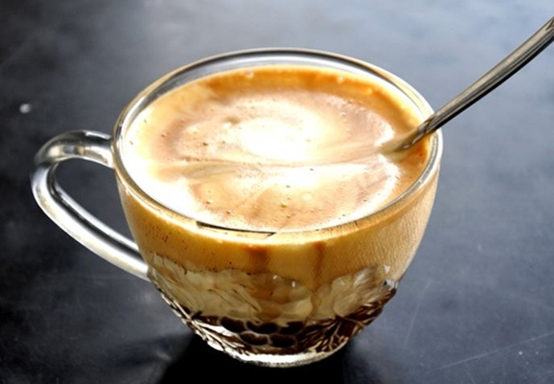

Nguồn: elle.vn
Chắc hẳn hầu hết chúng ta đều biết cách pha chế các món cà phê đơn giản như cà phê đen, bạc sỉu... nhưng chỉ cần bỏ ra thêm chút thời gian, bạn vẫn có thể tự tay pha chế những món ăn yêu thích khi không thể đến quán cà phê trong thời gian này.
| STT | Tên |
| 1 | Vietnamese Coconut Coffee |
| 2 | Egg Coffee |
| 3 | Golden Coffee Smoothie |
| 4 | Banana Coffee Smoothie |
| 5 | Vanilla coconut cashew latter smoothie |
Nguyên liệu:
Cách pha chế
|
|  | Nguyên liệu:
Cách pha chế
|
Coppyright 2021